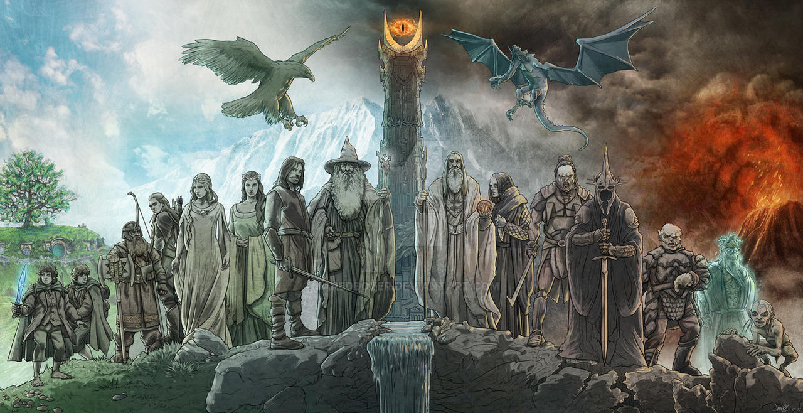

Merhaba, Ben Orçun Kenan Gürbıyıkoğulları. Lüleburgaz'da yaşıyorum. Bilim kurgu, aksiyon, Macera, karakter gelişimi üzerinden giden filmlere ve dizilere bayılıyorum. Favori filmim Yüzüklerin efendisi ve dizi ise Spartacus. Front-end alanında kariyer planlıyorum ve aynı zamanda Bilgisayar Programcılığı okuıyorum. Patika dev academy ve kodluyoruz ile kendimi aktif olarak geliştirmeye devam ediyorum, harika bir platform, herkese öneririm.
J. R. R. Tolkien'in kendi oluşturduğu dil ve kurgusal bir dünya içinde geçen; Elf,İnsan,Cüce ve Orklar arasında asırlar boyu süren savaş ve yaşamı anlatan bir dizi kitap uyarlamasından ortaya çıkmış filmdir kendisi. Kesinlikle öneririm.
Filmde en çok işlenen duygular için cesaret ve umut desem yanılmam diye düşünüyorum.
Tolkienin kendine has bir dil ile birlikte kurgulayıp yarattığı dünya'da geçen 3.çağı konu alan kısımdır aslında, film uyarlaması ve ilk olarak bu evrenle filmlerde karşılaşan kişiler genellikle kitapları bilmezler halbuki evrenin çeyreğine denk düşer bu film serisi. Çok insan görmüşümdür filmden sonra kitapları okuyup daha da zevk alanları.
